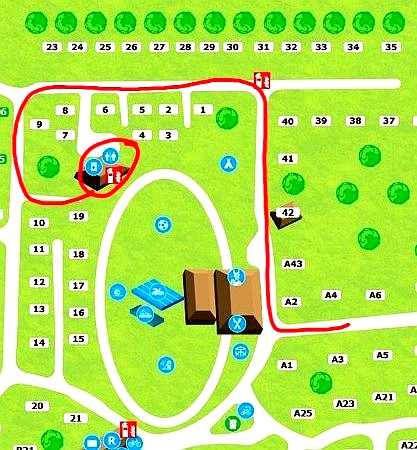

Often overlooked by tourists, Wageningen is consistently loved by those who discover it. A compact, vibrant university city set within some of the most beautiful natural terrain in the Netherlands — the Veluwe forests, the Rhine riverbanks, and the wooded Wageningse Berg are all within a short ride or walk.
Wageningen University (WUR), consistently ranked among the world's best for life sciences, gives the city an international flavour — great coffee, diverse restaurants, and a progressive, welcoming atmosphere. Yet outside the city centre, the pace slows immediately. By the time you reach the Wielerbaan park, the world has gone quiet.
Hundreds of kilometres of dedicated cycling paths weave through the Veluwe forests, along the Rhine dykes, and through villages like Rhenen, Ede, and Arnhem. The terrain is varied — rare for the Netherlands — with gentle hills and sweeping forest lanes. Bike hire is easily arranged locally.
Starting from your doorThe Wielerbaan park borders the Wageningse Berg — a rare hilly landscape covered in oak, beech, and heather moorland. Footpaths start immediately outside the cottage. Morning walks here are extraordinary, especially in autumn when the colours are at their peak.
0 min walkManaged by Wageningen University, Belmonte Arboretum is a beautiful botanical garden home to rare and unusual trees from around the world. Breathtaking in spring blossom and autumn colour. A short drive or a lovely cycle from the park.
10 min driveFollow the river Rhine westward for flat cycling and walking along the dykes. The Grebbeberg, nearby, is a place of natural beauty and historical depth — rolling wooded terrain with a poignant wartime past that still moves visitors deeply.
15 min driveA lively, international university town full of independent cafés, weekly markets, and excellent restaurants. The main street (Hoogstraat) has everything you need, and the market on Wednesday and Saturday mornings is excellent for local produce and Dutch cheese.
6 min drive · 10 min by bikeRed kites, deer, foxes, and rare woodland birds are frequent visitors in and around the park. Bring binoculars — the early mornings are extraordinary. Deer are commonly seen at the forest edge at dawn and dusk.
In your gardenWageningen's café scene punches well above its size. Several excellent specialty coffee spots around the university campus and Hoogstraat area are worth seeking out.
6 min driveWednesday and Saturday morning markets on the main square. Fresh local produce, Dutch cheeses, flowers, and bread. A proper market worth setting your alarm for.
6 min driveFrom Dutch brown cafés to international restaurants near the WUR campus — the international student population means surprisingly diverse and good dining. Your hosts are happy to recommend their favourites.
Ask Christopher & ZuzanaThe nearest supermarket is just 3 minutes by car or 6 minutes by bike. Wageningen has multiple options including Albert Heijn and Jumbo, well-stocked for self-catering stays.
3 min driveThe Wielerbaan Holiday Park itself has a small on-site restaurant — convenient for evenings when you don't feel like cooking or driving anywhere at all.
On siteThe park has a seasonal outdoor swimming pool — pool passes for each guest are left ready in the cottage on arrival. A wonderful bonus in summer, especially for families with children.
On site (seasonal)Both Boshuisje (A06) and Boshuisje Chez-Michel (A04) are in the A-section of Recreatiepark de Wielerbaan — tucked in the quieter, more forested eastern side of the park, close to the laundry building and park facilities.
On arrival, enter through the main barrier on Zoomweg. Your keycard and lockbox code are in the welcome message from your hosts. The A-section is signposted from the main entrance.
Recreatiepark de Wielerbaan
Zoomweg 7–9
6705 DM Wageningen
Reception: +31 (0)88 500 2474
